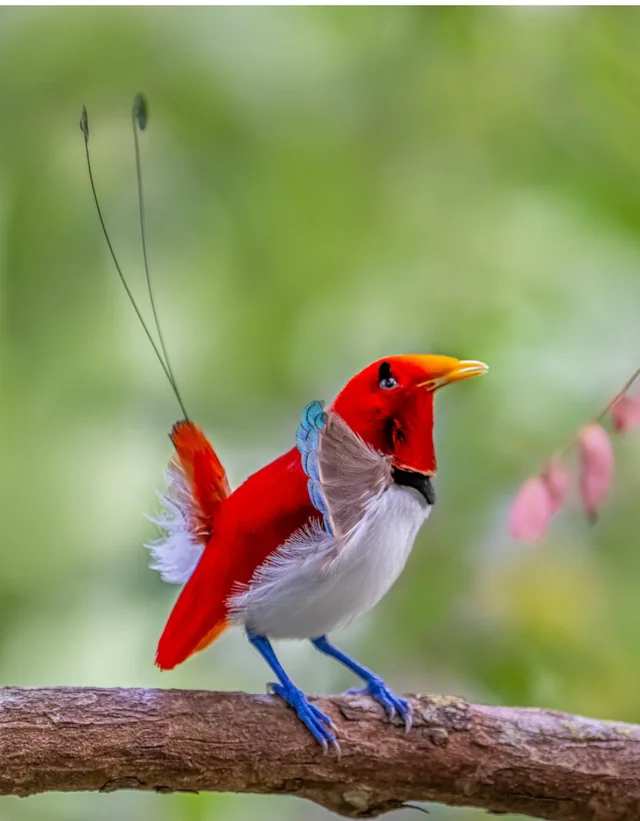
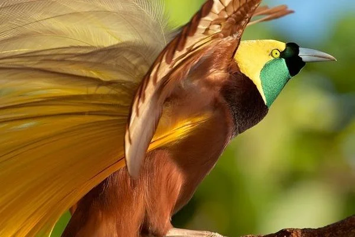
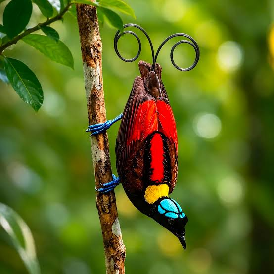

Especies destacadas
Conoce tres de las aves del paraíso más espectaculares y descubre qué las hace únicas.

Ave del paraíso rey Rojo intenso
Es una de las más pequeñas de la familia. El macho es de un rojo brillante y tiene dos plumas largas en espiral en la cola, con discos verdes en las puntas.

Ave del paraíso mayor Dorado
Los machos lucen plumas amarillas y doradas a los costados que abren como un abanico durante sus exhibiciones, mientras emiten fuertes llamados en grupo.

Ave del paraíso de Wilson Colorida
Combina rojo, amarillo, verde y una cabeza azul sin plumas. Sus colas curvas parecen rizos y es una de las especies más buscadas por los fotógrafos de aves.